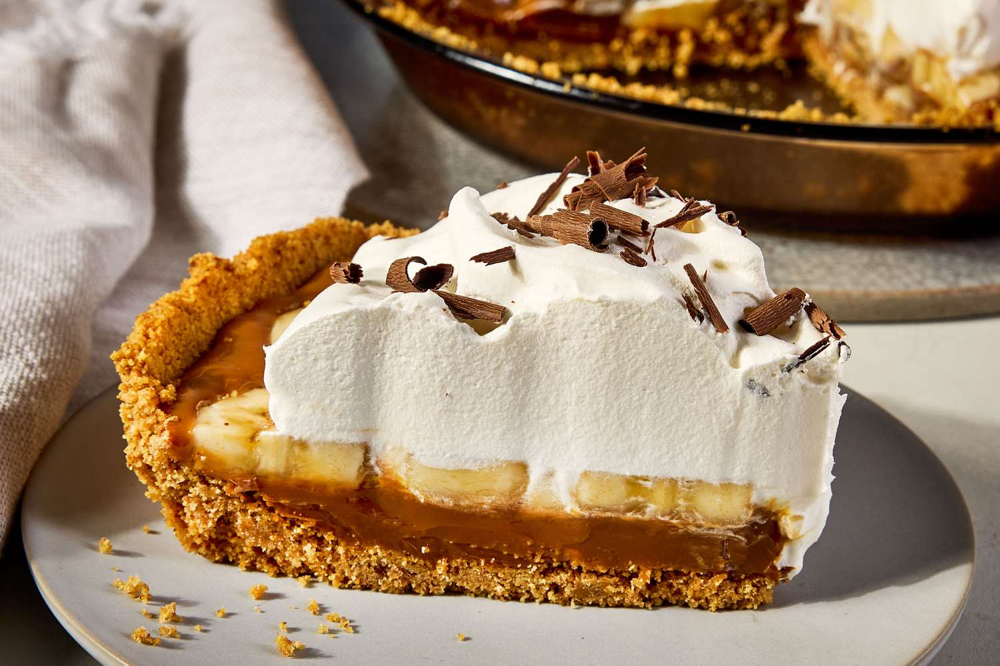

приготовление:
-
Можно купить 1 банку готовой варёной сгущёнки, но домашняя получается нежнее. Положить банку сгущенки в кастрюлю с водой. Вода должна покрывать банку на несколько сантиметров минимум! Готовить сгущёнку на небольшом огне 2,5 часа. ВАЖНО следить, чтобы вода в кастрюле ВСЕГДА покрывала банку сгущенки, и при необходимости доливать горячую воду. Проверять каждые 30-45 минут, возможно, даже слишком часто, но тут лучше перебдеть :) Через 2,5 часа выключить огонь и оставить сгущёнку остывать в кастрюле с водой до комнатной температуры.
-
Разогреть духовку до 180 °C. Измельчить в кухонном комбайне 220 г обычного печенья — я использую digestive biscuits. Смешать крошку с 90 г растопленного сливочного масла.
-
Переложить смесь в форму диаметром около 20 см. Сформировать небольшой бортик и плотно утрамбовать основу дном стакана или небольшой миски. Выпекать 7–8 минут, затем полностью остудить.
-
Выложить на остывшую основу 1 банку варёной сгущёнки и разровнять. Если десерт планируется подавать позже, на этом этапе убрать его в холодильник.
-
Нарезать кружочками 3 банана и полностью покрыть ими слой сгущёнки.
-
Взбить 450 мл сливок для взбивания с 2 ст. л. сахарной пудры и ванильным экстрактом до мягких пиков. Покрыть бананы взбитыми сливками.
-
Посыпать Баноффи пай какао-порошком или украсить небольшим количеством шоколадной стружки.